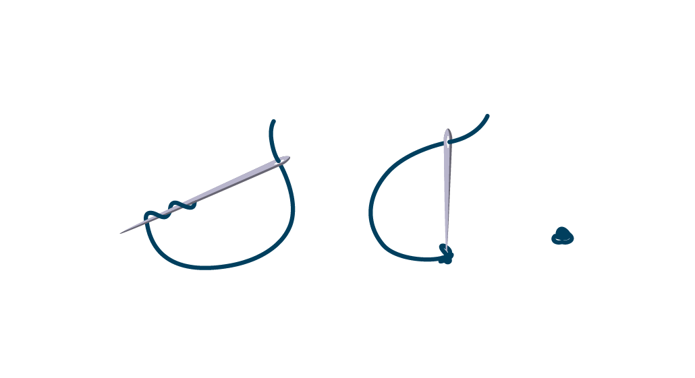
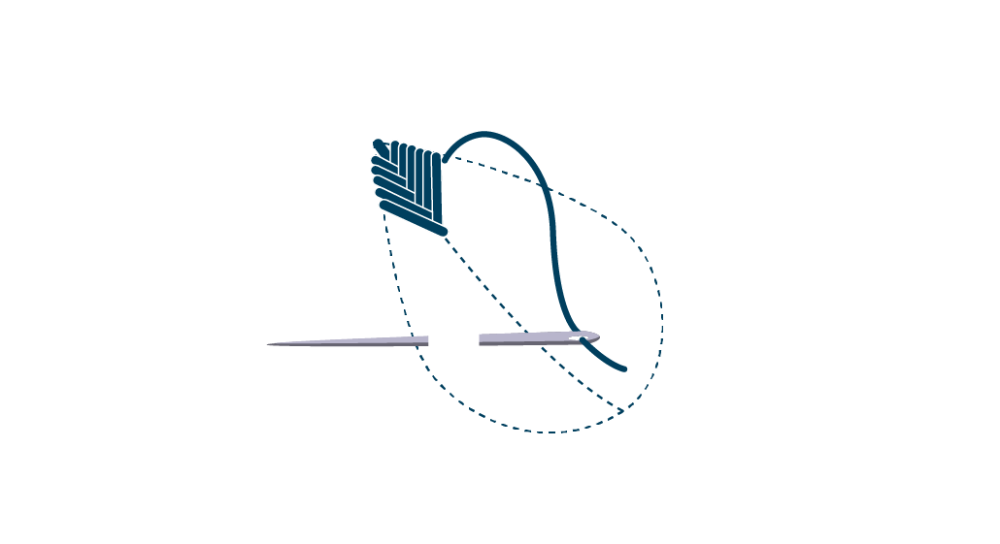
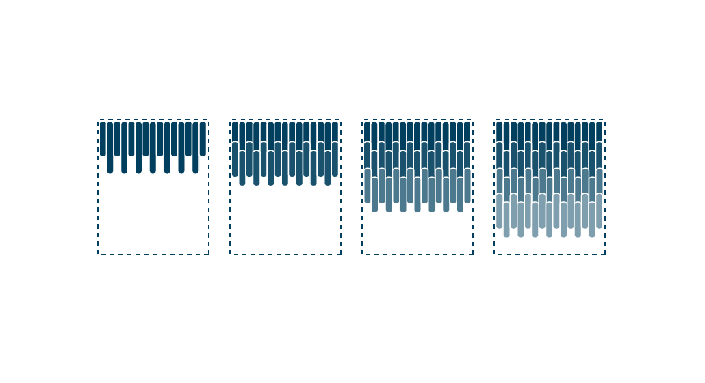
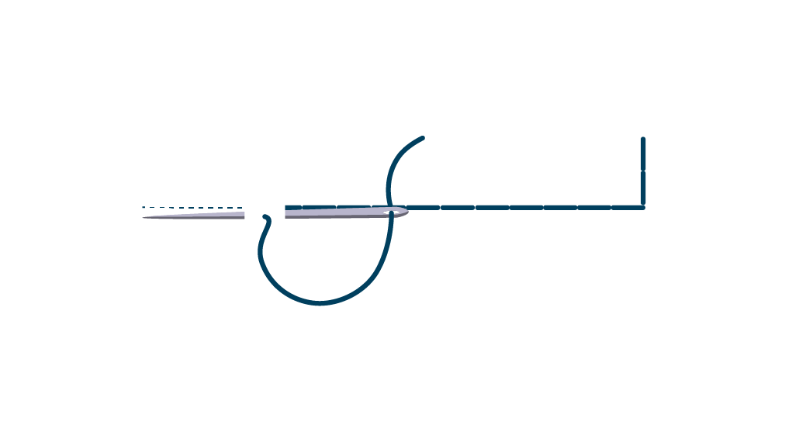
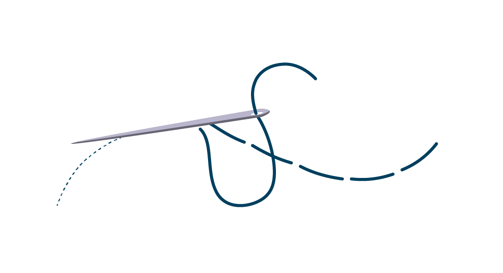
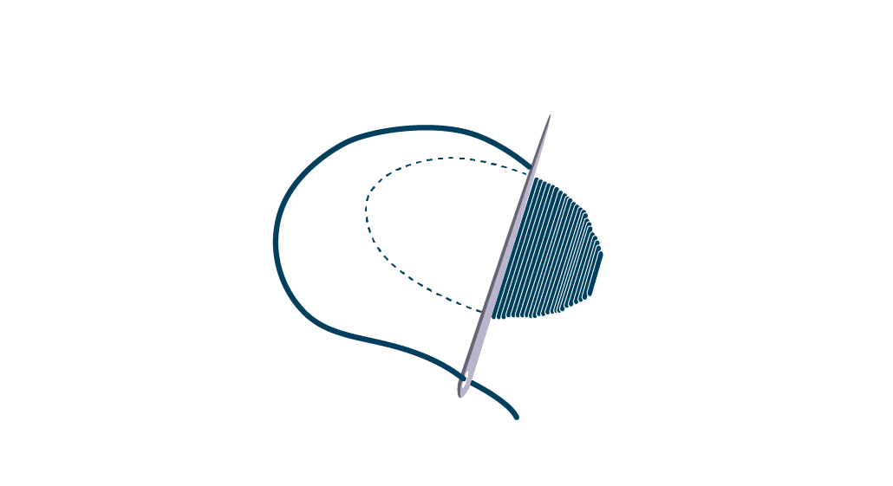

-
Woven Wheel Stitch
Woven Wheel Stitch is an easy-to-learn embroidery stitch that packs a huge punch. It is sometimes called woven rose stitch, and as its name suggests, it forms a wheel or rose-like circle by weaving the thread.
-
Knotted Stitch
A knotted stitch is any embroidery technique in which the yarn or thread is knotted around itself. Common knotted stitches include French knots and coral stitch. Knotted stitches can be subdivided into individual or detached knots, continuous knotted stitches, and knotted edgings.
-
Fishbone Stitch
The fishbone stitch is often used to create and fill a leaf design or comparable shape. In order to work the motif, first a line of tiny dots is drawn down its middle. Then the thread is taken in and out of the ground material in such a way that a stitch is created that resembles a fishbone, and when made in a series creating the desired (leaf) design.
-
Long and Short Stitch
The long and short stitch is a form of free style embroidery, often used for shading flower petals and bird feathers. The characteristic feature of this stitch is that the stitches of the first row are worked in such a way that they are alternately long and short. The stitches in the ensuing rows are all of the same length and fit into the first row
-
Back Stitch
Backstitch or back stitch and its variants stem stitch, outline stitch and split stitch are a class of embroidery and sewing stitches in which individual stitches are made backward to the general direction of sewing. In embroidery, these stitches form lines and are most often used to outline shapes and to add fine detail to an embroidered picture. It is used as a hand-sewing utility stitch to attach definitively and strongly two pieces of fabric together. It is also used for writing.
-
Running Stitch
The running stitch or straight stitch is the basic stitch in hand-sewing and embroidery, on which all other forms of sewing are based. The stitch is worked by passing the needle in and out of the fabric. Running stitches may be of varying length, but typically more threadis visible on the top of the sewing than on the underside. So, a running stitch runs through the fabric.
-
Satin Stitch
In sewing and embroidery, a satin stitch or damask stitch is a series of flat stitches that are used to completely cover a section of the background fabric. Narrow rows of satin stitch can be executed on a standard sewing machine using a zigzag stitch or a special satin stitch foot. In order to maintain a smooth edge, shapes can be outlined with back, split or chain stitch before the entire shape including the outline is covered with satin stitch. Machine-made satin stitch is often used to outline and attach appliquesto the ground fabric.